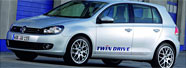

Notícias
| Ouriço achado com fraturas recebe tratamento vip |  | VW divulga plano para carros elétricos e exibe o Golf Blue-e-Motion | |
| Esta ouriço teve sorte. Ele foi encontrado com uma perna e bacia fraturadas no jardim de uma casa em Northampton (Inglaterra) e levada para um hospital veterinário em Buckinghamshire. | A Volkswagen apresentou nesta segunda-feira (3), durante evento alemão para a apresentação da “Plataforma Nacional para a Mobilidade Elétrica”, o protótipo 100% elétrico Golf Blue-e-Motion | ||
| Estadão | Gazeta do Povo |
| Vale vende controle dos negócios de alumínio | Toyota divulga informações sobre unidades convocadas do Corolla |
| Valor inclui transação em dinheiro, dívidas e participação em ações; norueguesa Norsk Hydro assume gestão de ativos. Leia mais. | Fabricante começa a atender os proprietários a partir desta segunda-feira. Empresa recomenda que motoristas retirem o tapete até a verificação. Leia mais. | Av. Araucária, 780 Vila A Foz do Iguaçu/PR Telefone: (45) 34225300 |